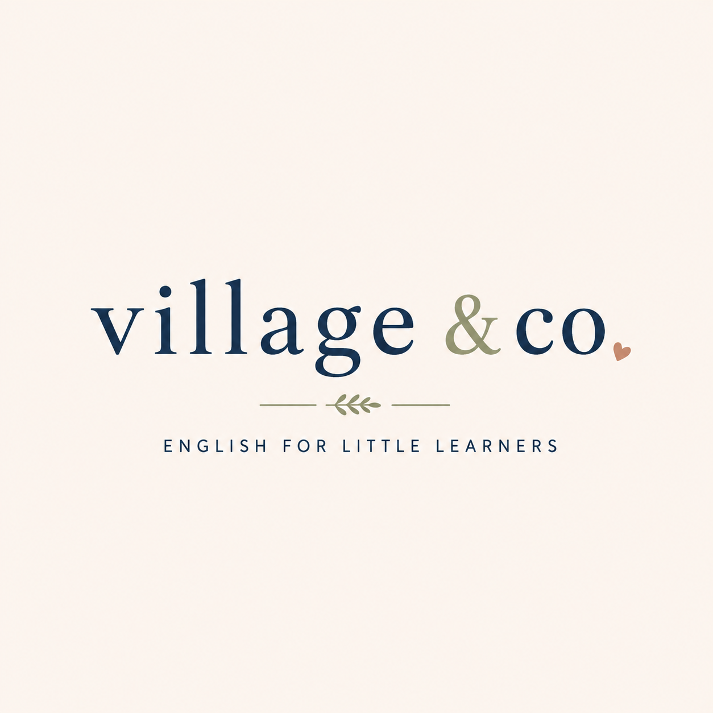

100% English
Durante as aulas, o inglês é o idioma da comunicação. A exposição constante ajuda o aluno a se sentir cada vez mais confortável usando a língua.
A conversational approach to learning English, designed to make language a natural part of everyday life.
Take the Level Test →
Aprender inglês não precisa parecer uma aula tradicional.
Our lessons are built around real conversations, everyday experiences and the things each student genuinely enjoys.
Porque quando o inglês faz parte da conversa, aprender becomes something natural.
It's about using it.
Durante as aulas, o inglês é o idioma da comunicação. A exposição constante ajuda o aluno a se sentir cada vez mais confortável usando a língua.
Conversas naturais sobre situações do dia a dia, interesses pessoais, histórias, jogos e assuntos que fazem sentido para cada aluno.
A curiosidade do aluno também faz parte da aula. Seus interesses ajudam a criar conversas que tornam o aprendizado mais significativo.
As aulas acompanham a idade, os interesses e a personalidade de cada aluno — porque aprender uma nova língua também é aprender a se expressar.
Early learners
Para crianças que estão começando a construir sua relação com o inglês através de histórias, brincadeiras, músicas, curiosidade e conversas simples.
Growing independence
Para alunos que já começam a desenvolver seus próprios interesses e opiniões, usando o inglês para conversar sobre assuntos que realmente fazem parte do seu mundo.